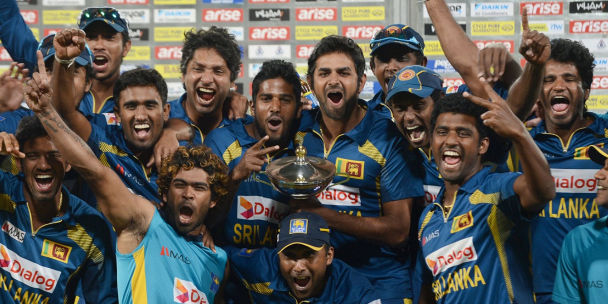

SRI LANKA CRICKET TEAM
Sri Lanka's national cricket team achieved considerable success beginning in the 1990s, rising from underdog status to winning the Cricket World Cup in 1996. Since then, the team has continued to be a force in international cricket. The Sri Lankan cricket team reached the finals of the 2007 and 2011 Cricket World Cups consecutively. They ended up being runners up on both occasions.[9]
Sri Lanka won the Cricket World Cup in 1996, the ICC Champions Trophy in 2002 (co-champions with India), and the ICC T20 World Cup in 2014. They have been consecutive runners up in the 2007 and 2011 Cricket World Cups, and have been runners up in the ICC T20 World Cup in 2009 and 2012. The Sri Lankan cricket team currently holds several world records, including the world record for the highest team total in Test cricket..